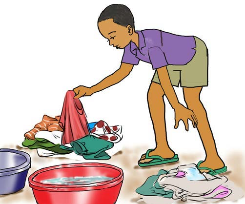
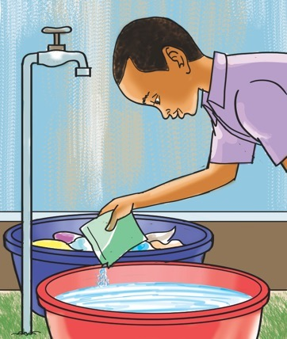

I know the steps for washing my clothes.
I know the steps for washing my clothes.
A friendly cat guide introduces the next learning activity.
I wash my clothes by following these steps
1
Step 1

I separate coloured clothes from white ones.
There is a pupil separating coloured clothes from white clothes.
2
Step 2

I add powdered soap in a basin with clean water.
There is a pupil adding powdered soap to a basin of clean water.